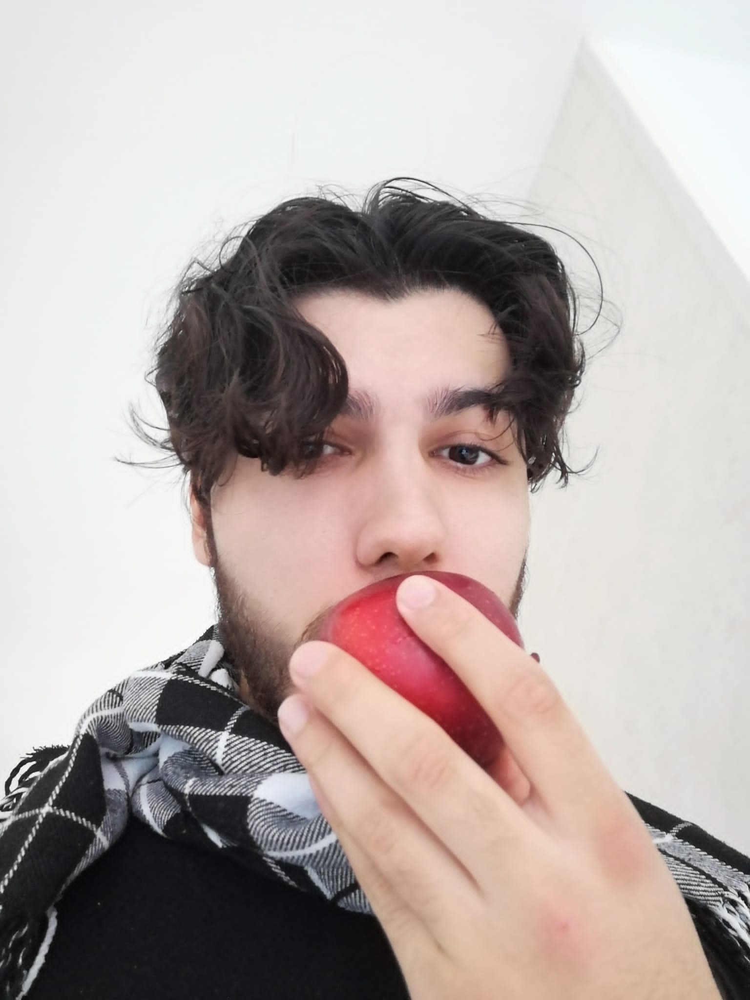

Franklin Geels

Opleidingen
- VMBO B / Hubertus & Berkhoff de culinaire Vakschool / Amsterdam / September 2013 tot Mei 2017
- MBO niveau 2 Gastheerschap/ MBO College Centrum Da Costa / Amsterdam / September 2018 tot September 2020
- MBO niveau 4 Software Development / MBO College Zuidoost / Amsterdam / February 2023 tot TBA
Certificaten
- VMBO B
- MBO niveau 2
- Command line
- Learning the OWASP Top 10
- HTML/CSS beginner
- The Cybersecurity Threat Landscape
Talen
Vaardigheden
- Microsoft Office
- HTML
- CSS
Eigenschappen
- Drankenkennis
- Communicatie vaardigheden
Werk Ervaring
-
Keukenmedewerker bij restaurant SmaaQt.
Functies: voorbereiding.
-
Dierenwinkel medewerker.
Functies: Verzorgen van de dieren in de winkel. Vakkenvullen.
-
Gastheer bij restaurant d'Vijff Vlieghen.
In de periode oktober 2018 tot juli 2019.
Functies:
Schoonmaak van het bedrijf.
Restaurant verzorging (Mise-en-place.)
Het verblijf van de gasten.
-
Gastheer in Restaurant Moon.
Functies:
Schoonmaak van het bedrijf.
Restaurant verzorging (Mise-en-place.)
Het verblijf van de gasten.
Magazijn Beheer.
-
Bartender in Bar Dapper.
In de periode December 2021 tot February 2023.
Functies:
Schoonmaak van het bedrijf.
Bar verzorging (Mise-en-place.)
Het verblijf van de gasten.
Magazijn Beheer.